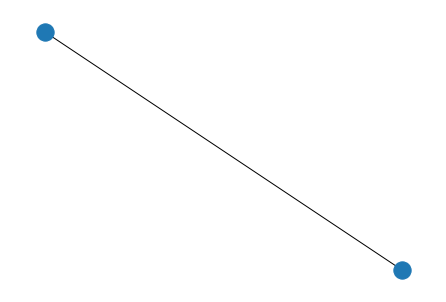
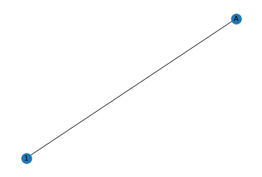
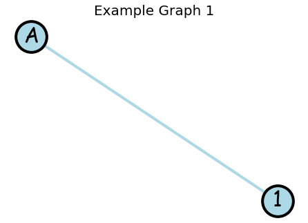
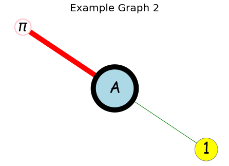
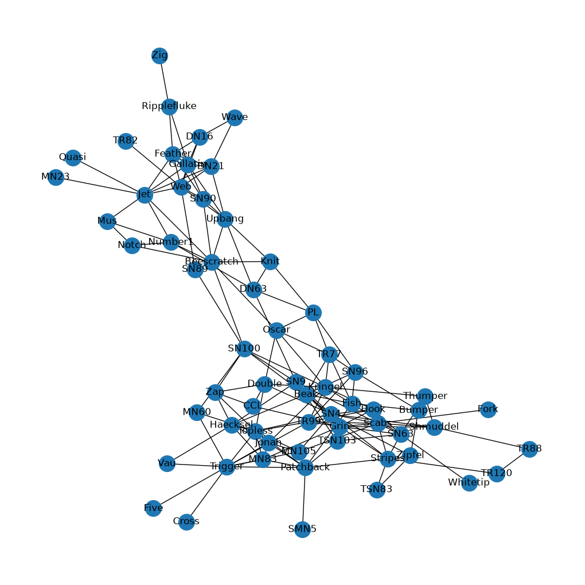

Week 3 Day 4#
Today, we’ll finish up the data visualization introduction with a libary called networkx.
# preliminaries
import networkx as nx
import matplotlib.pyplot as plt
import pandas as pd
---------------------------------------------------------------------------
ModuleNotFoundError Traceback (most recent call last)
Cell In[1], line 5
1 # preliminaries
2
3 import networkx as nx
4 import matplotlib.pyplot as plt
----> 5 import pandas as pd
ModuleNotFoundError: No module named 'pandas'
NetworkX#
networkx is a popular network drawing Python library. The foundational object in the library is the graph object. This object stores nodes and edges with the option of more data.
To create a graph in networkx, we can use the nx.Graph() function:
contgraph = nx.Graph()
type(contgraph)
networkx.classes.graph.Graph
Now that we have a graph, let’s investigate whatever information might be stored in the object. Since we have only made the graph and not adding any nodes or edges, these lists are empty:
contgraph.edges()
EdgeView([])
contgraph.nodes()
NodeView(())
We can add some nodes and edges:
contgraph.add_node('A') # create node with name 'A'
contgraph.add_node(1) # create node with name 1
contgraph.add_edge('A', 1)
Great! Now, we have a graph with two nodes (‘A’ and 1) and a single edge ( { ‘A’ , 1 } ). To see the graph, we can visualize it with nx.draw():
nx.draw(contgraph)

We can’t tell which node is which. But, networkx saves the label information so we can tell networkx to display that:
nx.draw(contgraph,
with_labels=True)

Like the matplotlib library, we can control lots of features in the graphs as well. You can try these for yourself in lab:
nx.draw(contgraph,
with_labels = True, # creates node labels
node_size = 2000, # controls node size
node_color = 'lightblue', # controls color within the node
edge_color = 'lightblue', # controls color within the edge
width = 4, # controls width of edges
edgecolors = 'black', # color of node boundary
linewidths = 4, # width of node boundary
font_size=30, # node label size
font_family='cursive') # node label font
plt.title('Example Graph 1',
fontsize=20)
Text(0.5, 1.0, 'Example Graph 1')

Instead of forcing these features for all nodes, you can make them individual with lists as well:
contgraph2 = nx.Graph()
contgraph2.add_edges_from([ ('A', 1), ('A', '$\pi$')])
nx.draw(contgraph2,
with_labels = True,
node_size = [7000, 2000, 1000],
node_color = ['lightblue', 'yellow', 'white'],
edge_color = ['green', 'red'],
width = [1,10],
edgecolors = ['black', 'grey', 'pink'],
linewidths = [10, 1, 2],
font_size =30,
font_family='cursive')
plt.title('Example Graph 2',
fontsize=20)
Text(0.5, 1.0, 'Example Graph 2')

Networks from Data#
Networks are particularly useful for visualizing data. Using pandas, we can visualize some fun network data.
In the “Datasets” folder on GitHub, there is a csv file entitled “DolpinNetwork.csv”. This csv file contains the social information of a dolphin community written about in this paper: https://abdn.elsevierpure.com/en/publications/the-bottlenose-dolphin-community-of-doubtful-sound-features-a-lar/ .
dolphincsv = pd.read_csv("https://raw.githubusercontent.com/garrett-kepler/Math-300----Mathematical-Computing/refs/heads/main/Datasets/DolphinNetwork.csv")
dolphincsv
| Source | Target | |
|---|---|---|
| 0 | Double | CCL |
| 1 | Feather | DN16 |
| 2 | Feather | DN21 |
| 3 | Fish | Beak |
| 4 | Fish | Bumper |
| ... | ... | ... |
| 154 | Zap | Topless |
| 155 | Zig | Ripplefluke |
| 156 | Zipfel | Bumper |
| 157 | Zipfel | SN4 |
| 158 | Zipfel | TSN83 |
159 rows × 2 columns
Each dolphin is a “source” or “target” if the dolphins communicate/touch/hangout often. The dolphins will be nodes and their friendship/non-friendship will be indicated with edges.
First, let’s convert these into tuples:
edges = [(dolphincsv['Source'].iloc[i], dolphincsv['Target'].iloc[i]) for i in range(len(dolphincsv))]
edges
[('Double', 'CCL'),
('Feather', 'DN16'),
('Feather', 'DN21'),
('Fish', 'Beak'),
('Fish', 'Bumper'),
('Gallatin', 'DN16'),
('Gallatin', 'DN21'),
('Gallatin', 'Feather'),
('Grin', 'Beak'),
('Grin', 'CCL'),
('Haecksel', 'Beak'),
('Hook', 'Grin'),
('Jet', 'Beescratch'),
('Jet', 'DN21'),
('Jet', 'Feather'),
('Jet', 'Gallatin'),
('Jonah', 'Haecksel'),
('Knit', 'Beescratch'),
('Knit', 'DN63'),
('Kringel', 'Double'),
('Kringel', 'Hook'),
('Kringel', 'Jonah'),
('MN105', 'Jonah'),
('MN23', 'Jet'),
('MN83', 'Grin'),
('MN83', 'Haecksel'),
('MN83', 'Jonah'),
('Mus', 'Jet'),
('Notch', 'Beescratch'),
('Notch', 'Mus'),
('Number1', 'Beescratch'),
('Number1', 'DN63'),
('Number1', 'Jet'),
('Number1', 'Mus'),
('Number1', 'Notch'),
('Oscar', 'Beescratch'),
('Oscar', 'Double'),
('Oscar', 'Kringel'),
('Patchback', 'Fish'),
('Patchback', 'Jonah'),
('Patchback', 'MN105'),
('Patchback', 'MN83'),
('PL', 'DN63'),
('PL', 'Knit'),
('PL', 'Oscar'),
('Quasi', 'Jet'),
('Ripplefluke', 'Feather'),
('Ripplefluke', 'Gallatin'),
('Scabs', 'Fork'),
('Scabs', 'Grin'),
('Scabs', 'Hook'),
('Scabs', 'MN105'),
('Shmuddel', 'Grin'),
('Shmuddel', 'Scabs'),
('SMN5', 'Patchback'),
('SN100', 'Beescratch'),
('SN100', 'Kringel'),
('SN100', 'MN60'),
('SN4', 'Double'),
('SN4', 'Grin'),
('SN4', 'Hook'),
('SN4', 'MN105'),
('SN4', 'Scabs'),
('SN4', 'Shmuddel'),
('SN4', 'SN100'),
('SN63', 'Grin'),
('SN63', 'Hook'),
('SN63', 'Kringel'),
('SN63', 'Scabs'),
('SN89', 'SN100'),
('SN9', 'Beak'),
('SN9', 'DN63'),
('SN9', 'Grin'),
('SN9', 'Haecksel'),
('SN9', 'Scabs'),
('SN9', 'SN100'),
('SN9', 'SN4'),
('SN90', 'Beescratch'),
('SN90', 'Feather'),
('SN90', 'Gallatin'),
('SN96', 'Beak'),
('SN96', 'Bumper'),
('SN96', 'Fish'),
('SN96', 'PL'),
('Stripes', 'Grin'),
('Stripes', 'Patchback'),
('Stripes', 'Scabs'),
('Stripes', 'SN4'),
('Stripes', 'SN63'),
('Thumper', 'Bumper'),
('Thumper', 'Kringel'),
('Thumper', 'Shmuddel'),
('Thumper', 'SN63'),
('Topless', 'Double'),
('Topless', 'Haecksel'),
('Topless', 'Jonah'),
('Topless', 'MN105'),
('Topless', 'MN60'),
('Topless', 'MN83'),
('Topless', 'Patchback'),
('Topless', 'SN4'),
('TR120', 'Stripes'),
('TR77', 'Beak'),
('TR77', 'Fish'),
('TR77', 'Kringel'),
('TR77', 'Oscar'),
('TR77', 'PL'),
('TR77', 'SN96'),
('TR88', 'Shmuddel'),
('TR88', 'TR120'),
('TR99', 'Grin'),
('TR99', 'Hook'),
('TR99', 'Kringel'),
('TR99', 'Scabs'),
('TR99', 'SN96'),
('TR99', 'Topless'),
('Trigger', 'Cross'),
('Trigger', 'Five'),
('Trigger', 'Jonah'),
('Trigger', 'MN105'),
('Trigger', 'MN60'),
('Trigger', 'MN83'),
('Trigger', 'Patchback'),
('Trigger', 'Topless'),
('Trigger', 'TR99'),
('TSN103', 'Grin'),
('TSN103', 'Patchback'),
('TSN103', 'SN63'),
('TSN103', 'SN9'),
('TSN83', 'Stripes'),
('Upbang', 'Beescratch'),
('Upbang', 'DN21'),
('Upbang', 'DN63'),
('Upbang', 'Gallatin'),
('Upbang', 'Knit'),
('Upbang', 'SN90'),
('Vau', 'Haecksel'),
('Vau', 'Trigger'),
('Wave', 'DN16'),
('Wave', 'DN21'),
('Web', 'DN16'),
('Web', 'DN21'),
('Web', 'Feather'),
('Web', 'Gallatin'),
('Web', 'Jet'),
('Web', 'SN89'),
('Web', 'SN90'),
('Web', 'TR82'),
('Web', 'Upbang'),
('Whitetip', 'SN63'),
('Zap', 'CCL'),
('Zap', 'Double'),
('Zap', 'Haecksel'),
('Zap', 'SN100'),
('Zap', 'Topless'),
('Zig', 'Ripplefluke'),
('Zipfel', 'Bumper'),
('Zipfel', 'SN4'),
('Zipfel', 'TSN83')]
We now have a list of edges. Let’s create a graph to put the edges in:
dolphin = nx.Graph()
dolphin.add_edges_from(edges) # add all the edges at once
plt.figure(figsize = (10,10))
nx.draw(dolphin,
node_size=400,
with_labels=True)

This will be the network you will deal with today in lab.
Practice Lab Problems#
We are going to make a social network. This can be real or made up. Up to you!
Add nodes representing people
Add edges if these people talk
Make the edges bigger if they are good friends and smaller if they are just acquaintances
Make the nodes size correspond to height
Make the node color correspond to hair color (i.e. if hair is brunette, the node is brown)
Make sure your final plot has:
a title
the names of the people displayed
color
is legible and presentable
an appropriate sizing
For the dolphin social network:
Import the data
Draw the network
Use as many
networkxparameters as possible (that is, innx.draw(), add all the parameters:node_size,node_color, etc.) such that the network is still presentable and understandable
You can find some information about nx.draw() here: documentation link.